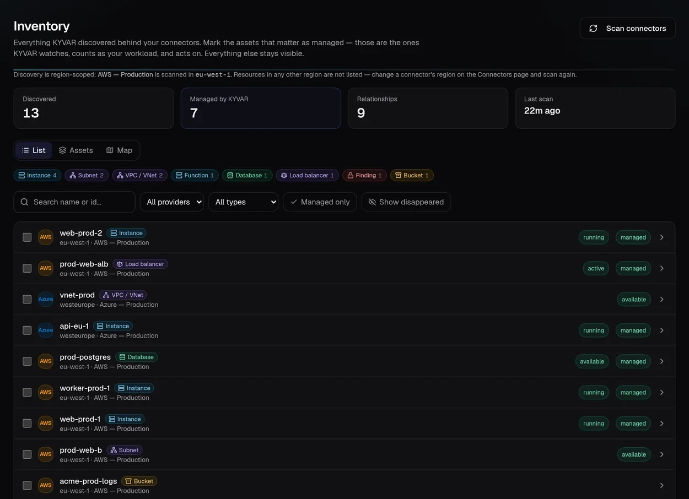
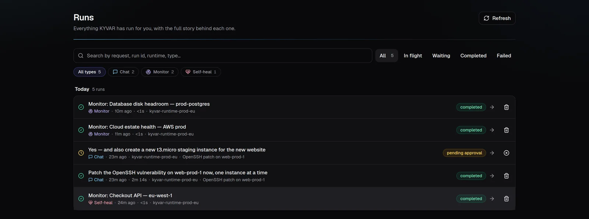

SECURITY & COMPLIANCE
Autonomous operations —
without autonomous risk.
KYVAR assumes the agent, operator, runtime, and surrounding data may all become adversarial. Controls are enforced before execution, not added after the fact.
The write-gate chain
- Global and per-connector kill switches
- Action and parameter allowlists
- Credential-derived environment classification
- Risk policy and separation of duties
- Dry-run and rollback before execution
- HIGH / CRITICAL real writes refused
Identity and tenant boundaries
- OIDC authorization code + PKCE
- TOTP MFA and protected break-glass access
- Role and tenant resolved from the database per request
- Connector-level RBAC controls both action and visibility
- Cross-tenant objects return 404 — no ID oracle
Credentials stay controlled
- Encrypted at rest; never echoed by APIs
- Decryption pinned to the one enrolled runtime
- Per-run, memory-first delivery
- Control-plane tokens stripped from agent subprocesses
- Customer-owned secret stores and model keys supported
Audit that security can use
- Actor, target, connector, policy, approver, and outcome
- CSV export plus syslog / webhook forwarding
- Credential-safe run events
- Retention controls and correlation IDs
- Authenticated adversarial tests become regressions
◈Private by architecture
Deploy in the customer environment. Customer data stays with the customer except model calls they explicitly configure.
🛡Bounded agents
Step budgets, destructive-command detection, output treated as data, and approval for any write plan.
◎Enterprise perimeter
TLS, HSTS, CSP, no-store APIs, loopback-only data services, SSRF protection, and least privilege.
Every control is enforced in the request path — a policy that only reports after the fact is a dashboard, not a gate.
SEE IT IN THE PRODUCT
The gate, on screen.

Findings are first-class inventory: a CNAPP finding lands on the asset that owns it, filterable and tracked from open to closed.

Everything KYVAR has run, with the full story behind each one — who asked, which runtime executed, what completed and what is still held for approval.
PUT IT TO THE TEST
Let your security team try to break it.
The best pilot outcome is a security team that observed every decision and found nothing ungoverned. Start read-only, open one narrow write path, and review the evidence.